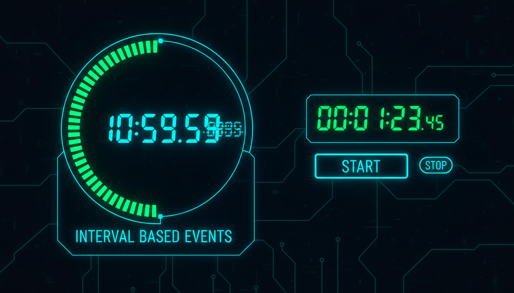

Інтервали, таймінг, анімації, оновлення

// Таймер
Timer^ timer = gcnew Timer();
timer->Interval = 1000; // 1 секунда
timer->Tick += gcnew EventHandler(this, &MyForm::OnTimerTick);
timer->Start();
// Обробник таймера
int seconds = 0;
void OnTimerTick(Object^ sender, EventArgs^ e) {
seconds++;
lblTime->Text = String::Format("Час: {0:D2}:{1:D2}",
seconds / 60, seconds % 60);
// Анімація
if (progressBar->Value < progressBar->Maximum) {
progressBar->Value++;
} else {
timer->Stop();
MessageBox::Show("Завершено!");
}
}
// Зупинка та запуск
timer->Stop();
timer->Start();